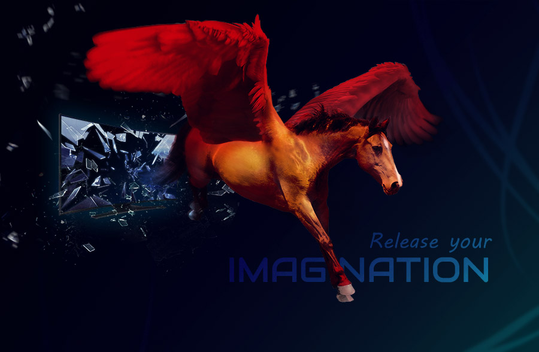
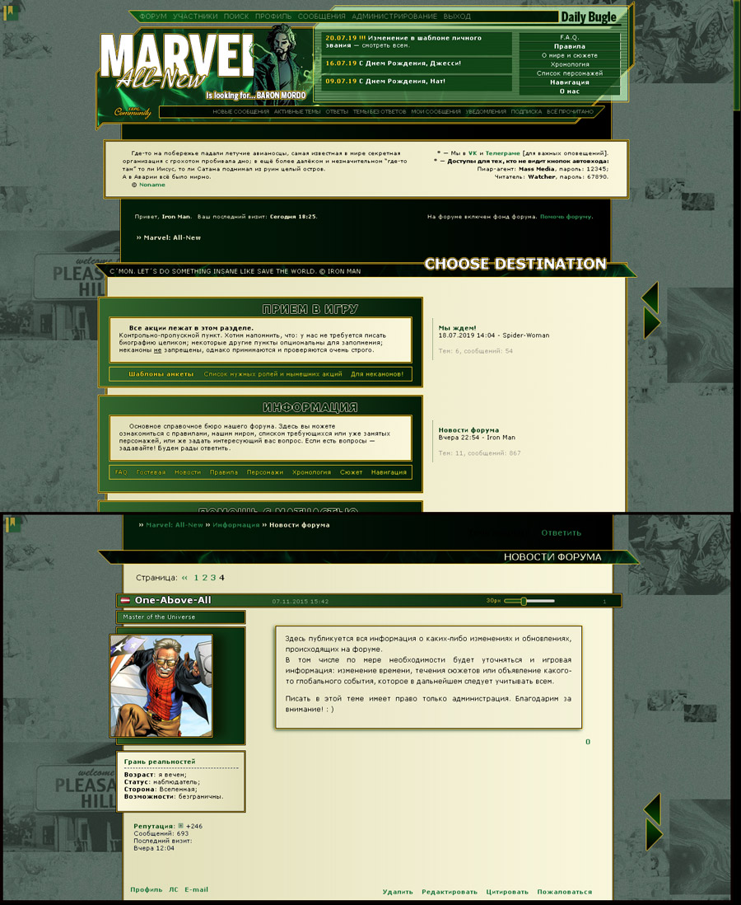
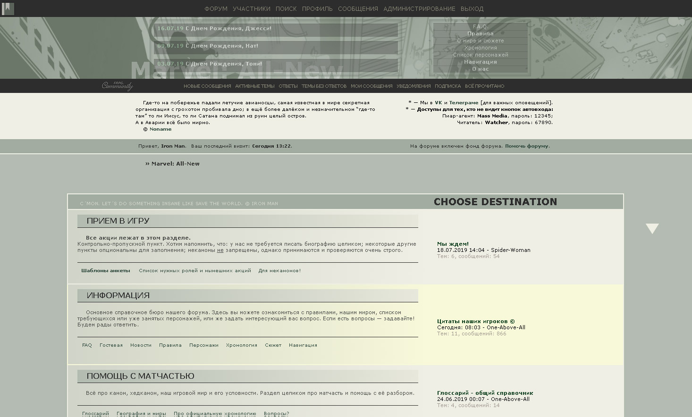
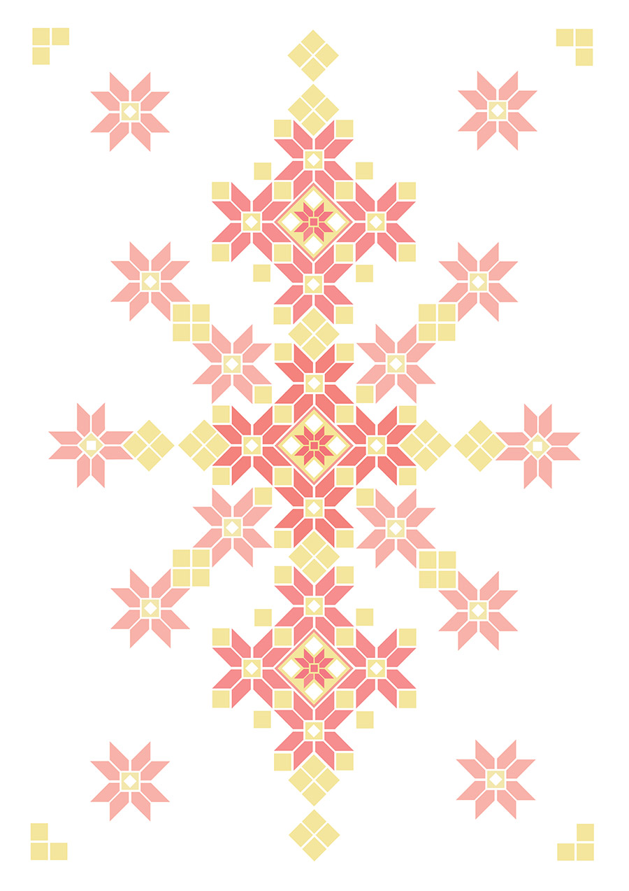

Please note that I have used stock photos for photomanipulations here and mostly they are not mine; all side-stock images belongs to their authors. Currently my works here are non-commercial only and listed down with a very little descriptions, but to place more proper credits on them than it is now is in the nearest gallery modification plans.